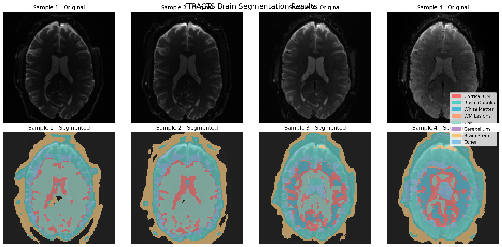
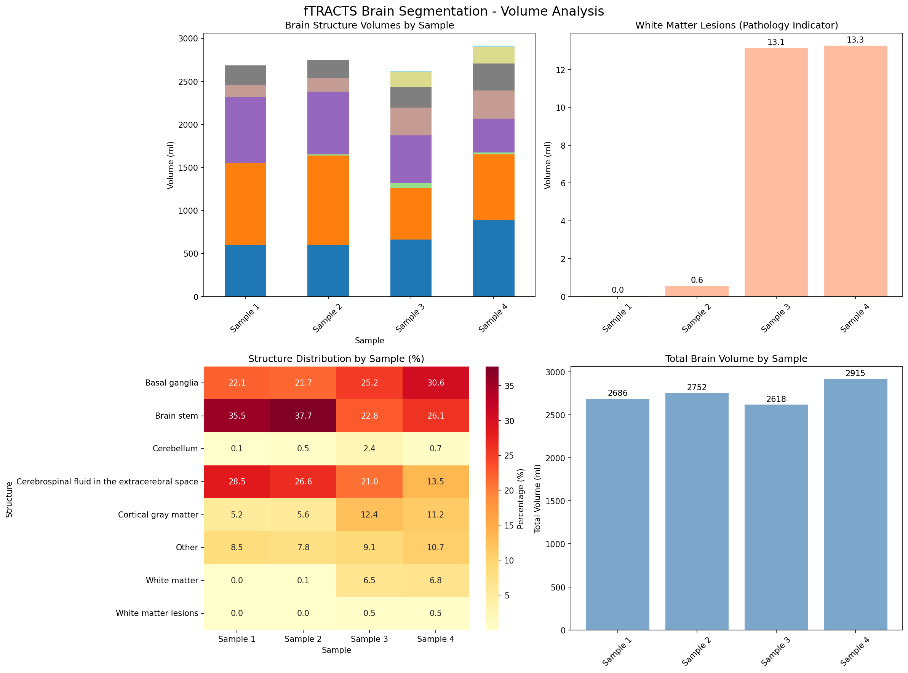

Brain Segmentation Analysis Report
fTRACTS Sample: Sample 2
Analysis Date: 2025-07-25 15:24:05
Input File: data/input/sample2/fTRACTS_07302024-0008-00001-000001-01.nii
Pathology Assessment: Minimal
White Matter Lesion Volume: 0.55 ml
Summary Statistics
Total Brain Volume
2752424 mm³ (2752.4 ml)
Segmented Structures
8 brain regions
WM Lesions
0.55 ml (0.02%)
Analysis Method
3D U-Net Deep Learning
Detailed Brain Structure Analysis
| Brain Structure |
Volume (mm³) |
Volume (ml) |
Percentage |
Distribution |
| Brain stem |
1038424 |
1038.42 |
37.7% |
|
| Cerebrospinal fluid in the extracerebral space |
731992 |
731.99 |
26.6% |
|
| Basal ganglia |
598016 |
598.02 |
21.7% |
|
| Other |
215256 |
215.26 |
7.8% |
|
| Cortical gray matter |
153296 |
153.30 |
5.6% |
|
| Cerebellum |
12824 |
12.82 |
0.5% |
|
| White matter |
2064 |
2.06 |
0.1% |
|
| White matter lesions |
552 |
0.55 |
0.0% |
|
Clinical Significance
✓ Minimal Pathological Findings
- Low white matter lesion burden
- Brain structure appears largely normal
- No significant pathological indicators detected
Reduced cortical gray matter volume noted
Visualization
Sample Comparison

Volume Analysis

Technical Details
Model Information:
Architecture: 3D U-Net
Input Channels: Single-channel MRI (adapted from T1+FLAIR training)
Output Classes: 11 brain tissue types
Training Data: MR Brain Segmentation Challenge 2018
Validation Loss: 0.6925 (Dice coefficient)
Processing Details:
Original Image Size: 104×104×72 voxels
Processing Size: 128×128×64 voxels (resized)
Voxel Spacing: Variable based on acquisition
Normalization: Percentile-based (1st-99th percentile)
Output Files:
Segmentation: {sample_info['seg_path']}
Statistics: {sample_info['stats_path']}
Methodology & Limitations
Analysis Method
- Deep learning-based brain segmentation using 3D U-Net
- Trained on multi-modal MRI data (T1-weighted + FLAIR)
- Adapted for single-channel fTRACTS data
- Automated tissue classification into 11 anatomical regions
Important Limitations
- Model trained on different imaging protocol than fTRACTS
- Results should be validated by experienced neuroradiologist
- Segmentation accuracy may vary with image quality
- Clinical correlation always required for diagnosis
Generated by TBI Analysis Pipeline -
🤖 Claude Code |
Report Date: {datetime.now().strftime("%Y-%m-%d %H:%M:%S")}